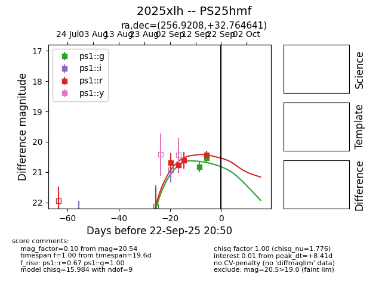
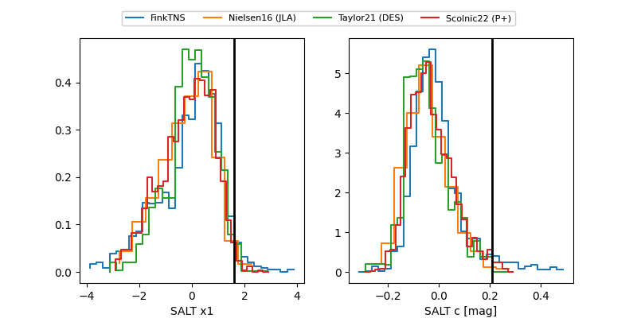

TNS: 2025xlh
YSE: 2025xlh
2025xlh (yse,tns)
PS25hmf (panstarrs)
equatorial (ra, dec) = (256.9208,+32.76464)
galactic (l, b) = (55.4777,+35.03851)


last ps1::g=20.54, ps1::r=20.43
2 ps1::g, 4 ps1::r detections